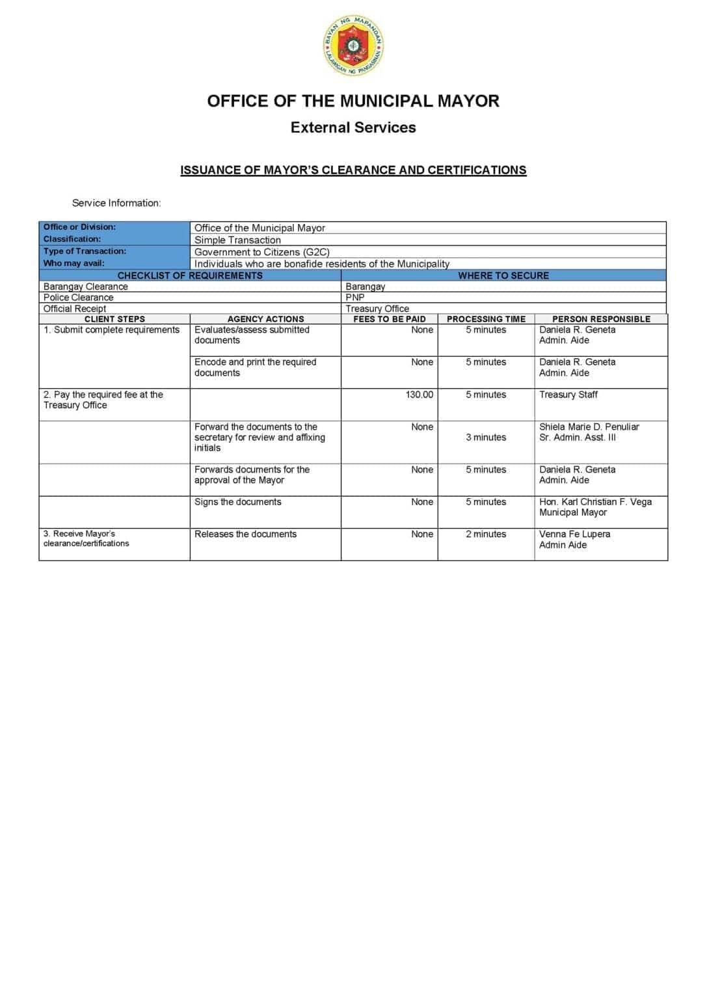

Mayor's Office
Mayor's Clearance & Certificates
Get a clearance or certificate signed by the Mayor of Mapandan. ₱130 fee, 15 minutes processing.
Deskripsyon
The Office of the Mayor issues various clearances and certificates to residents and businesses of Mapandan. The staff receives the request, verifies the applicant's records, prepares the document, and submits it to the Mayor for signature. The client pays the required fee at the Treasury Office before claiming the document.
Saray Kinakailangan
- Letter of Request
- Valid Government-issued ID
- Community Tax Certificate (Cedula) from Treasury Office
Proseso
- Submit letter of request and valid ID to the Mayor's Office.
- Staff receives and reviews the request (5 min).
- Pay ₱130 at the Treasury Office and obtain official receipt.
- Present OR to the Mayor's Office. Staff prepares the document for the Mayor's signature (5 min).
- Receive the signed clearance or certificate (5 min).
Na-scan a Dokumento
Na-scan a pahina manipud ed opisyal a Mapandan Citizen’s Charter ya mangipabitar ed saray kinakailangan, bayarin, oras na panagproseso, tan responsable a staff para ed serbisyo.
